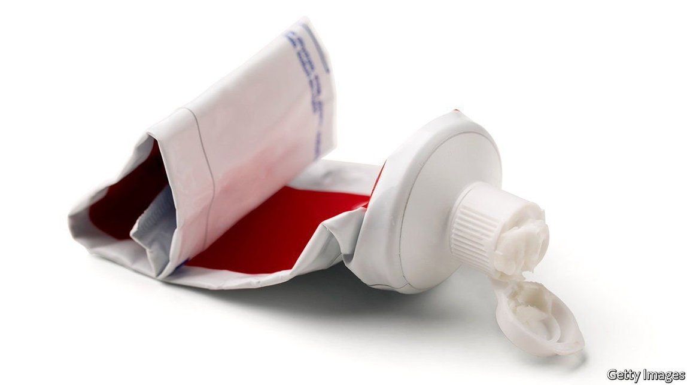

Text
2021-06-02T10:04:38+00:00
Every last drop
一滴不剩
一滴不剩
How to get all the toothpaste out of the tube
如何把牙膏挤干净？
如何把牙膏擠乾淨？
With a super-slippery surface
用一种超光滑的表面
用一種超光滑的表面
A GNARLED TOOTHPASTE tube, squeezed and twisted out of shape in a vain attempt to extract its remaining contents, haunts many a bathroom. But not, perhaps, for much longer. Colgate-Palmolive, an American consumer-goods giant, has taken up an invention by a pair of experts in super-slippery surfaces to produce toothpaste tubes that promise to deliver every last scrap of their contents.
皱巴巴的牙膏管是许多浴室里挥之不去的难题。就算挤到扭曲变形，也别想把里面的残留物都弄出来。不过，这一幕可能很快将不复存在了。美国消费品巨头高露洁棕榄采纳了两位研究超光滑表面的专家的发明，生产出的牙膏管承诺能把牙膏挤得一滴不剩。
皺巴巴的牙膏管是許多浴室里揮之不去的難題。就算擠到扭曲變形，也別想把裡面的殘留物都弄出來。不過，這一幕可能很快將不復存在了。美國消費品巨頭高露潔棕欖採納了兩位研究超光滑表面的專家的發明，生產出的牙膏管承諾能把牙膏擠得一滴不剩。
In 2012 Kripa Varanasi, a professor at the Massachusetts Institute of Technology, and Dave Smith, his PhD student, set up a company called LiquiGlide to commercialise their work on making liquids flow more easily through pipes and out of containers. What caught many people’s imaginations at the time was a demonstration of how this could be used to empty a ketchup bottle without shaking it vigorously.
麻省理工学院教授克里帕·瓦拉纳西（Kripa Varanasi）和他指导的博士生戴夫·史密斯（Dave Smith）研究如何让液体更容易通过管道和流出容器。他们在2012年成立了一家名为LiquiGlide的公司，寻求把研究成果商业化。当时他们的展示令许多人大感兴趣：使用了他们的技术后，无需用力摇晃就能把瓶子里的番茄酱倒空。
麻省理工學院教授克里帕·瓦拉納西（Kripa Varanasi）和他指導的博士生戴夫·史密斯（Dave Smith）研究如何讓液體更容易通過管道和流出容器。他們在2012年成立了一家名為LiquiGlide的公司，尋求把研究成果商業化。當時他們的展示令許多人大感興趣：使用了他們的技術後，無需用力搖晃就能把瓶子里的番茄醬倒空。
So far, ketchup-makers have not embraced the idea. But the health and beauty industry, where products tend to be pricier than ketchup, is interested. Mibelle Group, a Swiss producer of health-care and beauty products, employs the technology to lessen the amount of material left stuck to the insides of pipes and vessels in its factories when it is time for a clean-up. LiquiGlide’s deal with Colgate is, though, the firm’s first big break into a consumer business.
到目前为止，还没有哪家番茄酱制造商欣然接受了这个创意。健康和美容行业倒是很感兴趣，因为这两个行业的产品往往比番茄酱更贵。瑞士保健和美容产品生产商米百乐集团（Mibelle Group）采用了这项技术，以减少在做清理时粘附在工厂管道和容器内部的物质。不过，与高露洁达成交易是LiquiGlide进军消费业务的首个重大突破。
到目前為止，還沒有哪家番茄醬製造商欣然接受了這個創意。健康和美容行業倒是很感興趣，因為這兩個行業的產品往往比番茄醬更貴。瑞士保健和美容產品生產商米百樂集團（Mibelle Group）採用了這項技術，以減少在做清理時粘附在工廠管道和容器內部的物質。不過，與高露潔達成交易是LiquiGlide進軍消費業務的首個重大突破。
The new toothpaste, called Elixir, comes in three varieties: a formula for whitening teeth, one for gum and enamel care and a “detox” version which, it is claimed, removes impurities from the mouth. All are packaged in plastic tubes that can be emptied with ease. Elixir has gone on sale in Europe, though no decision has yet been made about whether it will be sold elsewhere.
高露洁的新款牙膏名叫Elixir，配方有三种类型，一种用于美白牙齿，一种用于牙龈和牙釉质的护理，还有一种是“排毒”版，号称可以去除口腔污物。它们所用的包装都是可以轻松挤干净的塑料管。Elixir已经在欧洲上市，不过高露洁还没决定是否也会在其他地方上架。
高露潔的新款牙膏名叫Elixir，配方有三種類型，一種用於美白牙齒，一種用於牙齦和牙釉質的護理，還有一種是“排毒”版，號稱可以去除口腔污物。它們所用的包裝都是可以輕鬆擠乾淨的塑料管。Elixir已經在歐洲上市，不過高露潔還沒決定是否也會在其他地方上架。
To produce their slippery pipes and containers, Dr Varanasi and Dr Smith first impose a microscopically textured pattern on them and then apply a suitably formulated liquid. This fills the gaps in the texture, creating a surface across which gooey substances slide easily. Any risk of contamination can be eliminated by making the liquid in question from materials also employed in the product.
为了制造出超顺滑的管道和容器，瓦拉纳西和史密斯首先在它们的内壁打造出极其细微的凹凸纹理，然后再加入一种配方得当的液体。这种液体会填补纹理间的空隙，从而形成一个能让粘稠物质轻松滑过的表面。这种液体可以用容器内装载的产品用到的原料来制造，这样就可以完全消除污染的风险。
為了製造出超順滑的管道和容器，瓦拉納西和史密斯首先在它們的內壁打造出極其細微的凹凸紋理，然後再加入一種配方得當的液體。這種液體會填補紋理間的空隙，從而形成一個能讓粘稠物質輕鬆滑過的表面。這種液體可以用容器內裝載的產品用到的原料來製造，這樣就可以完全消除污染的風險。
Besides pleasing customers who like to get their money’s worth, the new, slippery toothpaste tubes should help with recycling. Existing tubes are rarely recycled, not only because they have residue left inside them but also because they are usually made from a laminate of plastic and aluminium foil. Mixed materials of this sort are hard to recycle, and therefore end up being dumped in landfill, or incinerated.
这种新型超顺滑牙膏管除了能让那些不喜欢白白浪费钱的顾客开心，应该还有助于废物利用。现有的牙膏管很少被回收，不仅是因为里面有残余物，还因为它们通常是由一层塑料和铝箔制成。这种混合材料很难回收，因此最终会被扔到垃圾填埋场或者焚烧。
這種新型超順滑牙膏管除了能讓那些不喜歡白白浪費錢的顧客開心，應該還有助於廢物利用。現有的牙膏管很少被回收，不僅是因為裡面有殘餘物，還因為它們通常是由一層塑料和鋁箔製成。這種混合材料很難回收，因此最終會被扔到垃圾填埋場或者焚燒。
Despite their success with toothpaste, Dr Varanasi and Dr Smith have not given up on food producers. Besides ketchup, their slippery surfaces also aid the dispensing of products such as mayonnaise, and may help, too, with things like hummus and soured cream that have a thicker consistency and which usually come in tubs. They have, for instance, carried out a trial putting cream cheese into a squeezy bottle with a slot-shaped dispenser. “You get this perfect strip of cream cheese right on your bagel,” enthuses Dr Smith. ■
尽管已经把牙膏拿下，但两人并没有放弃食品生产商。除了番茄酱，他们的光滑表面还能帮人们更畅快地涂抹蛋黄酱等产品。还有鹰嘴豆泥和酸奶油之类更粘稠和通常用盒子装的产品或许也用得着。例如，他们做了一次试验，把奶油芝士装进一个可以挤的、带有槽状挤出口的瓶子里。“你可以在百吉饼上挤出完美的一圈奶油芝士。”史密斯兴奋地说。
儘管已經把牙膏拿下，但兩人並沒有放棄食品生產商。除了番茄醬，他們的光滑表面還能幫人們更暢快地塗抹蛋黃醬等產品。還有鷹嘴豆泥和酸奶油之類更粘稠和通常用盒子裝的產品或許也用得着。例如，他們做了一次試驗，把奶油芝士裝進一個可以擠的、帶有槽狀擠出口的瓶子里。“你可以在百吉餅上擠出完美的一圈奶油芝士。”史密斯興奮地說。